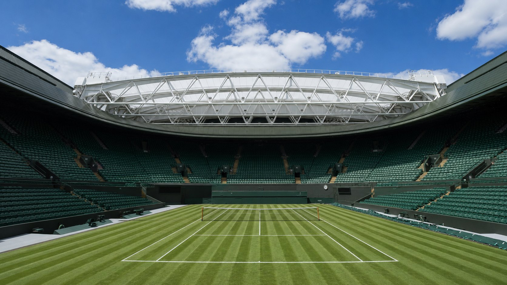

Prüfungsvorbereitung SoSe 2026. Aufgebaut entlang des Veranstaltungsplans von Binnenbruck & Brunert — vom ersten Ballkontakt bis zur Klausur Rückschlag.
Acht Module, aufgebaut entlang der Themen des Semesters. Von links nach rechts durcharbeiten — oder direkt dahin springen, wo es weh tut.
Zwei getrennte Baustellen: Studienleistung (2 LP, unbenotet) und Prüfungsleistung (separate Anmeldung, benotet).
beliebig
Vorhand cross
Rückhand cross
Longline: VH mit RH, RH mit VH
Hosenträger cross bzw. longline
Volley und Hinterfeld (mind. je 2× VH und RH)
Aufschlag + Return auf Sicherheit, dritter Ball als Winner, Punkt ausspielen (Tiebreak)
Der Raster, nach dem jede Teamstunde bewertet wird — und nach dem in der Klausur nach didaktisch-methodischen Konsequenzen gefragt werden kann.
Hintergründe & Einordnung: Welche Gedanken liegen dem Stundenthema zugrunde? Welche Anwendungsbereiche? Welche didaktisch-methodischen Konsequenzen?
Sportartspezifische Erwärmung, aufeinander aufbauende Übungs- und Spielformen mit Variationen, am Ende ein attraktives Zielspiel mit Taktik, klaren Regeln und Spaß.
Teilnehmende aktiv einbeziehen, Feedback einholen, Veränderungsideen erfragen und ausprobieren.
Im Zeitraffer methodische Schritte vollziehen: vom Leichten zum Schweren, vom Einfachen zum Komplexen, vom Bekannten zum Unbekannten, vom Langsamen zum Schnellen. Und: Plagiate werden beim Studiendekan und Prüfungsamt angezeigt.
Sieben Spiele, ein Prinzip: Ball über eine Trennlinie, Ziel ist der Fehler des Gegners. Die Klausur heißt nicht umsonst „Klausur Rückschlag" — die Feldmaße und Zählweisen sind der klassische Zahlen-Drill.
Diese Tabelle ist das Skelett. Feldmaß, Ball, Teamstärke, Zählweise — die vier Spalten, nach denen gefragt wird.
| Spiel & Schläger | Spielfeld | Ball | Teamstärke | Regelwerk / Zählweise |
|---|---|---|---|---|
| Tennis | Normalfeld 23,77 × 10,97 m Midcourt 18,00 × 8,23 m Kleinfeld 10,97 × 5,48 m | Schaumstoff, rot / orange / grün / gelb; Tennisball | Einzel · Doppel | 2 Sätze bis 15 Punkte; 2 Gewinnsätze beginnend bei 2:2, 3. Satz Match-Tie-Break |
| Padel | 20 × 10 m, ohne Doppelkanal | Padelball | Doppel | Zählweise wie beim Tennis im Doppel |
| Pickleball | 13,4 × 6 m, ohne Doppelkanal | Pickleball (Plastik, gelocht) | Doppel | Gewinnsätze bis 11 Punkte (mind. 2 Punkte Abstand) |
| Touchtennis | 12 × 6 m, mit Doppelkanal (Einzel 5 m breit) | Touchball / Schaumstoffball, gelb, Ø 8 cm | Doppel | 2 kurze Sätze bis 4 Spiele; Tie-Break bis 5 Punkte bei 4:4 |
| Streetracket | 3 × (2 × 2 m) | Streetracket-Ball | Einzel · Doppel | Immer nach oben spielen, kein Volley, bis 11 Punkte |
| Tamburello | Indoor 34 × 16 m Beach 24 × 11 m Kleinfeld 9,45 × 4,10 m | Soft- / Tennisball | 1:1 · 2:2 · 3:3 · 5:5 | Gewinnsätze bis 21 Punkte (bei 2:2) |
| Speckbrett | Tennisplatz 23,77 × 10,97 m (keine T-Linie) | Tennisball | Doppel | Gewinnsätze bis 21 Punkte |
Die Seminar-Übersicht rundet: Pickleball offiziell 13,41 × 6,10 m (44 × 20 ft), Küche 2,13 m (7 ft) vom Netz (USA Pickleball, Section 2). Padel offiziell exakt 20 × 10 m (FIP) — hier deckungsgleich. In der Klausur gilt die Seminar-Version. Die offiziellen Werte kennst du zur Sicherheit trotzdem.
Die prüfungsrelevanten Sonderregeln pro Spiel. Erst raten, dann aufdecken.
Speckbrett: 27 kostenlose Plätze in Münster, Holzschläger, Tennisball. Streetracket: drei Kreidequadrate reichen. Kein Verein, keine Platzgebühr.
Pickleball und Touchtennis reduzieren Flugkurve und Tempo — Ballwechsel gelingen ab der ersten Minute. Das ist der entscheidende didaktische Hebel gegenüber „echtem" Tennis.
Tamburello: kreisrund, Ø 24–28 cm, engmaschige Nylonmembran, kein Schaft — Griff direkt am Rahmen, Daumen liegt auf der Bespannung. Hoher Aufforderungscharakter, aber unberechenbare Eigendynamik.
Klick auf eine Linie, eine Zone oder das Netz — Maß, Regel und Beleg erscheinen rechts. Maßstabsgetreu nach den ITF Rules of Tennis.
Alle Maße in Metern. Das Doppelfeld ist das äußere Rechteck, das Einzelfeld schließt die Doppelkanäle aus.
Linien, Zonen und Netz sind anklickbar. Jede Auswahl liefert Maß, Regel und Belegstelle.
Erster Punkt.
Zweiter Punkt.
Dritter Punkt. Bei 40:40 → Einstand (Deuce), danach Vorteil.
Spiele für den Satz, mit zwei Spielen Vorsprung. Bei 6:6 → Tiebreak bis 7 (2 Punkte Vorsprung).
Im Seminar wird verkürzt gespielt: 2 Sätze bis 15 Punkte bzw. 2 Gewinnsätze beginnend bei 2:2, im dritten Satz Match-Tie-Break. In der Klausur zählt diese Version — die ITF-Zählweise ist der Hintergrund.
Die Ansagen, die du als Sportlehrer*in beherrschen musst — jede Karte mit eigener Strichfigur. Lernmodus blurrt die Namen: erst erklären, dann aufdecken.
Die erste Unterscheidung, die in der Klausur sitzen muss: tennisspezifische gegen unspezifische (integrative) Vermittlung. Fünf Konzepte, fünf Logiken.
Das zentrale Übersichtsblatt des Seminars, 1:1 übernommen. Links die drei tennisspezifischen Konzepte, rechts die zwei sportspielübergreifenden. Diese Tabelle ist die wahrscheinlichste Klausurfrage im Vermittlungsteil.
| Tennis — Vermittlungskonzepte | Sportspielvermittlungskonzepte | |||
|---|---|---|---|---|
| DTB-Kinderkonzept | Ballschule Tennis | Münsteraner Modell Altersspezialisten |
LTAD Long Term Athlete Development |
Taktik-Spiel-Modell Tactical Games Approach |
|
BLAU Bewegungsgrundlagen Bewegungsgeschichten Ballgeschicklichkeit Racketspiele Koordinations- & Teamspiele ROT Spaß am Tennis Ballgewöhnung & Ballkontrolle Spielverständnis Basisschlagtechniken Koordination & Motorik ORANGE Spielspaß & Teamgeist Bewegung & Beinarbeit Taktisches Verständnis Technische Fertigkeiten GRÜN Kondition & Athletik Technische Fertigkeiten Taktische Fähigkeiten Mentale Stärke Wettkampferfahrung |
A — Koordinative Basiskompetenzen sportspielübergreifend Beispiele: Druckvariationen Präzision Koordination B — Perzeptiv-motorische Basiskompetenzen tennisgerichtet Beispiel: Flugbahn des Balles erkennen C — Technisch-taktische Basiskompetenzen tennisspezifisch Beispiele: Spieleröffnung Grundlinienspiel Angriffs-/Netzspiel |
Tennis ist WEISS — Animateur 3–5 Jahre Tennis ist BLAU — Schneider 5–6 Jahre Tennis ist ROT — Architekt 6–8 Jahre Tennis ist ORANGE — Konditor 8–10 Jahre Fundamentales anhand von Bewegungsgrundformen; Aufschlag/Return in Spieleröffnungssituationen; Grundschläge in Grundliniensituationen; Netzspiel in Netz- und Angriffssituationen; Taktik anhand von Wenn-Dann-Situationen; Turnierformen Tennis ist GRÜN — Goldschmied 10–11 Jahre Spielsituationen: Aufschlag/Return, Grundlinienspiel, Netzspiel, Einzel- und Doppeltaktik, Turnierformen Tennis ist GELB — Begleiter / Entwicklungscoach ab 12–18+ Jahre Spieltraining anhand von Spielsituationen |
A Grundlagen Spaß an spannenden Aufgabenerfahrungen B Trainieren lernen Vielfältige Erfahrungen, um den Spielgedanken zu erleben C Training zum Trainieren Universelle Grundlagen erarbeiten D Training, um an Wettkämpfen teilzunehmen Individual-taktische Perfektion einsetzen E Training, um zu gewinnen Sportart erfolgsorientiert spielen |
ebenso auch Kasseler Vermittlungsmodell 1. Ballwechsel in Gang halten 2. Gegnerische Punktgewinne vermeiden 3. Gegner unter Druck setzen 4. Eigene Punkte erzielen „Was" vor „Wie" Spielintelligenz in 4 Phasen Wahrnehmung / Antizipation Was passiert hier? Verstehen und Interpretieren, Beurteilung Entscheidungsfindung Was muss ich tun? Technische Ausführung, Bewertung, Verhaltenssteuerung Wie mache ich es? |
Vom Kleinkind zur Sportart: erst allgemein, dann sportspielgerichtet, zuletzt sportspielspezifisch. Klick auf eine Stufe.
Das 8 × 7 × 6-Modell: acht koordinative, sieben perzeptiv-motorische und sechs technisch-taktische Basiskompetenzen. Die Werte in Klammern sind die Schwierigkeitseinstufungen aus der Zielmatrix — je höher, desto anspruchsvoller.
| A — Koordinative Basiskompetenzen sportspielübergreifend · 8 Stück |
B — Perzeptiv-motorische Basiskompetenzen tennisgerichtet · 7 Stück |
C — Technisch-taktische Basiskompetenzen tennisspezifisch · 6 Stück |
|---|---|---|
|
Präzisionsdruck — Ergebnis (5,48) Präzisionsdruck — Ablauf (5,48) Zeitdruck — Antizipation & Reaktion (3,85) Zeitdruck — Ablauf (3,50) Variabilitätsdruck — Präzision/Zeit (5,12) Komplexitätsdruck — Zeit (5,00) Organisationsdruck — Präzision (5,04) Laufkoordination |
Orientierung auf dem Platz (5,50) Flugbahn des Balles erkennen (5,54) Auftreffort & Absprungverhalten des Balles einschätzen Laufweg & Laufart zum Ball bestimmen (5,44) Spielpunkt des Balles bestimmen (5,48) Ballabgabe kontrollieren Armverlängerung / Schlägergefühl |
Spieleröffnung Ballwurf & Aufschlag · Rückschlag Grundlinienspiel Grundschlag Vorhand · Grundschlag Rückhand Angriffs-/Netzspiel Angriffsball · Volley/Smash · Passierball/Lob |
Dieselben Inhalte, aber sortiert nach dem, was du in der Klausur reproduzieren musst.
Vier Farbstufen, aufsteigende Komplexität:
Drei Ebenen von Basiskompetenzen — A → B → C:
Jede Stufe hat eine Trainer-Rolle:
Integrative / sportspielgerichtete Vermittlung. Vertreter: Heidelberger Ballschule, Teaching Games for Understanding (TGfU), Kasseler Vermittlungsmodell. Die vier taktischen Handlungsziele sind exakt die vier Praxistermine 13.05. bis 10.06.
13.05.
20.05.
03.06.
10.06.
Das Kernargument des Ansatzes: Erst die Spielsituation verstehen (Was passiert hier? Was muss ich tun?), dann die Technik (Wie mache ich es?). Technik ist Mittel, nicht Zweck.
Antizipation. Was passiert hier?
Interpretieren, beurteilen.
Was muss ich tun?
Technische Ausführung, Bewertung, Verhaltenssteuerung. Wie mache ich es?
Zur Vollständigkeit: Spielkompetenzmodell (u. a. Memmert) — Spielform · Wahrnehmen · Entscheiden · Umsetzen. Stichwort S-Ü-S bzw. S-S-S (Spielen–Üben–Spielen / Spielen–Spielen–Spielen).
„Kinder sind keine verkleinerten Erwachsenen."
„Kinder sind Allrounder und keine Spezialisten."
„Spielen macht den Meister."
„Probieren geht über Studieren."
Einordnung: Zielschussspiele → Wurfspiele · Torschussspiele · Rückschlagspiele Einzel · Rückschlagspiele Mannschaft. Die Rückschlagspiele Einzel wiederum: Tennis, Padel, Pickleball, Touchtennis, Speckbrett, Streetracket, FamilyTennis, Tamburello, Badminton, Tischtennis.
Aus der Zusammenfassung der Stunde vom 06.05.2026. Klick zum Aufdecken.
Das Herzstück des Semesters. Vier aufeinander aufbauende Handlungsziele, jedes mit eigenem Termin, eigenem Skript, eigener Technik. Klick auf ein Ziel — die Animation zeigt das Muster.
Stufenförmiger Aufbau nach dem DTB-Lehrplan: Sicherheit → Platzierung → Druck → Abschluss. Wer Stufe 4 spielt, ohne Stufe 1 zu können, verliert.
Stufe anklicken — auch direkt in der Grafik.
Prinzip 1 ist die wichtigste Zahl des Semesters: ca. 70 % der Punkte fallen durch unnötige Fehler — nicht durch Winner.
ca. 70 % unnötige Fehler. Wer den Ball einmal öfter über das Netz bringt als der Gegner, gewinnt den Punkt.
(2a) Stärken nutzen — (2b) und damit gleichzeitig eigene Schwächen umgehen.
(3a) Stärke des Gegners umgehen — (3b) seine Schwächen ausnutzen.
(4a) Fehler erzwingen — (4b) Gegner in der Defensive halten.
Berücksichtigung der Geometrie und der Zonen des Tennisplatzes → Winkelhalbierende.
Rot–Gelb–Grün: In welcher Situation bin ich, und was ist dort taktisch klug? Der häufigste Anfängerfehler: aus Rot heraus einen Winner versuchen.
Unter Druck, weit hinter der Grundlinie. Devise: Ball irgendwie sicher zurück ins Spiel. Klug ist ein hoher, langer Ball (z. B. cross), um Zeit zu gewinnen und zurück in Position zu kommen.
Fehlerquelle: Anfänger versuchen aus der Defensive den harten Winner — Risiko viel zu hoch.
Der Ballwechsel plätschert kontrolliert hin und her. Ziel: den Gegner durch clevere Platzierung bewegen (Winkel öffnen) und sich eine grüne Situation erarbeiten.
Der Gegner hat kurz oder schwach gespielt. Jetzt aufrücken und den Punkt offensiv abschließen — Winner oder Netzangriff.
Viele Spieler laufen nach jedem Schlag automatisch aufs Mittelzeichen zurück. Das ist mathematisch falsch.
Der Gegner hat aus seiner Ecke zwei extreme Optionen: longline oder maximal cross. Du musst dich auf der Linie positionieren, die den Winkel zwischen diesen beiden Flugbahnen halbiert.
Spielst du selbst Vorhand longline, verschiebt sich die Winkelhalbierende deutlich — du musst ein gutes Stück über das Mittelzeichen hinaus laufen, um beide Antworten auf kürzestem Weg zu erreichen.
Der Gegner erreicht den Ball nicht mehr. Direkter Gewinnschlag.
Der Gegner macht wegen des erzeugten Drucks einen Fehler. Der eigentliche Punktemotor.
Leichter Fehler ohne Druck. Das sind die ~70 % aus Prinzip 1.
„Tennis ist Langstrecke. Du kannst nicht immer mit Tempo 220 über die Autobahn rasen, du musst lernen, dass manchmal 110 reichen."
Bühler et al., 2012, S. 5
Vier Grundschläge, je Knotenpunkte, typische Fehlerbilder und ein methodischer Vermittlungsweg. Die Animation läuft in Zeitlupe durch die Phasen.
Egal welches taktische Ziel — verändert werden immer dieselben fünf Stellschrauben.
Dem Gegner keinen „Wohlfühlrhythmus" geben.
Ecken, freie Räume, gegen die Laufrichtung.
Zeit nehmen — oder bewusst herausnehmen.
Hoch und lang = Sicherheit; flach = Druck.
Topspin / Slice — ggf., als fünftes Element.
Vom Leichten zum Schweren — der Aufbau, mit dem du Tennis in einer 5. Klasse einführst.
Der Ball wird nicht über ein Netz, sondern unter einem Querbalken hindurch gespielt (z. B. zwei Kästen mit Balken darüber). Der Verzicht auf komplexe Flugkurven bringt sofortige Erfolgserlebnisse — unabhängig von Vorerfahrung. Kostengünstig (Langbänke, Softbälle), geringes Verletzungsrisiko, schult Hand-Auge-Koordination und Beinarbeit. Aufbau in der Sporthalle: Volleyballfeld dritteln.
Der taktische Kern ist nicht Schlaghärte, sondern Raumaufteilung, Antizipation und Absprache. Sechs Grundsituationen — klick eine an, die Animation zeigt Stellung und Lösung.
Blau = dein Team (S1/S2), Rot = Gegner (S3/S4). Durchgezogene Linie = Schlag, gestrichelt = Lob.
Die Lernkarte fürs Gedächtnis. Blau = eigenes Team (S1/S2), Rot = Gegner (S3/S4), durchgezogen = Schlag, gestrichelt = Lob. Klick auf ein Feld springt zur Situation.
Die Abgrenzung, nach der am 17.06. und am 08.07. explizit gefragt wurde. Der Unterschied liegt in Gegner, Zählung und Regelmodifikation.
| Form | Definition | Beispiel aus dem Seminar | Typische Regeln |
|---|---|---|---|
| Übungsform | Kein Gegner, keine Punkte. Situation künstlich vereinfacht, damit eine Bewegung/Position oft wiederholt werden kann. Der Lehrende kontrolliert den Ablauf. | Volley auf Zielzonen mit Einwurf | Keine Zählung, feste Zuspielform, Zielzonen, definierte Wiederholungszahl |
| Spielform | Spiel mit Gegner in spielnaher, aber regelmodifizierter Situation. Bonus-/Limitregeln provozieren die gewünschte Zielhandlung. | „3-Schlag-Doppel": nur die ersten 3 Schläge zählen; doppelte Punkte, wenn der Netzspieler abschließt | Punkt zählt, aber mit Bonus/Limit |
| Wettkampfform | Echtes Spiel nach offizieller Zählweise, ohne zusätzliche Verhaltensregeln. Sieger und Verlierer werden ermittelt. | Doppel bis 7 Punkte (Tiebreak) nach offiziellen Regeln | Offizielle Regeln, Ergebnis zählt |
| Turnierform | Spiel in einer organisierten Wettkampfsituation mit Auf-/Abstieg oder Punktevergabe über mehrere Begegnungen. Im Vordergrund steht die Gesamtwertung. | Kaiserturnier, Round-Robin | Auf-/Abstieg, Gesamtwertung |
Ein Tiebreak dient nur der Format- bzw. Zeitanpassung und ändert den Charakter der Organisationsform nicht. Erst Bonus- oder Limitregeln machen aus einer Wettkampfform eine Spielform.
Die Linie ist der kürzeste Weg des Returnspielers — sie gehört dem Netzspieler.
Beobachten und auf dessen „Reingehen" spekulieren. Die ersten drei Schläge entscheiden, wer in die Offensive kommt.
Besonders in der Tandemstellung (Of.–Of.): maximaler Druck, aber maximal lob-anfällig.
Für Großgruppen — also für die Schule. Die Definitionen sind knapp und trennscharf; genau so werden sie abgefragt.
Praxisnahes Spiel gegeneinander um Punkte ohne großen Druck.
Formeller Wettbewerb ohne Turnierstruktur.
Systematisierte Mehrrundentour, Sieger werden ermittelt.
Einfaches Ausscheidungsturnier. Nachteil für die Schule: Verlierer sind sofort raus.
Zweite Chance über den Verliererbaum.
Jeder gegen jeden (Round-Robin). Viele Spiele, faire Gesamtwertung.
Gruppenphase, dann KO — das Fußball-WM-Prinzip.
Auf-/Abstieg über Positionen. Verwandt: Kaiserturnier, King of the Court.
Fed Cup, Davis Cup, Laver Cup.
Paarung nach aktuellem Punktestand, kein Ausscheiden.
Teams über Asse/Könige/Damen/Buben bzw. Kreuz/Pik/Herz/Karo — 4 Viererteams = 8 Doppelpaarungen.
Spielzeit 3 Min, Verlierer rücken einen Platz runter, Gewinner rauf. Ziel: der Kaiserplatz.
Aus der Kartotheken-Zusammenstellung (Brunert). Die Namen sollten sitzen — die Fundstelle macht sie rückverfolgbar.
| Form | Literaturhinweis | Form | Literaturhinweis |
|---|---|---|---|
| 4+1=7 | Tennis ist ROT 2, KK 50 | King of the Court | Tennis ist ROT 2, KK 41 |
| 4 gegen 8 Tennisbälle | Tennis ist ROT 2, KK 49 | Kleiner Rundlauf | Pickleball Kids Coach, KK 41 |
| 59-Punkte-Wettkampf | Tennis ist ROT 2, KK 53 | Großer Rundlauf | Pickleball Kids Coach, KK 42 |
| 99-Punkte-Wettkampf | Tennis ist GRÜN, KK 48 | Kreuzchen-Turnier | Tennis ist ORANGE, KK 45 |
| Chinesisches Einzel | Tennis ist ROT 2, KK 52 | Lotto-Spiel „6 aus 18" | Tennis ist ROT 2, KK 42 |
| Drei-Punkte-Spiel | Tennis ist ORANGE, KK 50 | Low-T-Ball | Tennis ist WEISS 2, KK 41 |
| Jeder gegen Jeden | Tennis ist ROT 2, KK 55 | Pyramiden-Spiel | Tennis ist ROT 2, KK 44 |
| Jeder mit Jedem | Tennis ist ROT 2, KK 54 | Schweizer Turnier | Tennis ist ROT 2, KK 60 |
| Thirty30-Tennis | Tennis ist ROT 2, KK 45 | Schachturniersystem | Tennis ist BLAU |
| Niemand scheidet aus (8 Doppel) | Padel Kids Coach, KK 55 | Wäscheklammerspiel | Tennis ist BLAU |
| Turnier mit 12 / 16 / 24 TN (Doppel) | Tennis Plus, KK 55 / 54 / 53 | Turnierform 2er–6er | Tennis ist BLAU 2, KK 43–47 |
4 Viererteams (Asse, Könige, Damen, Buben) = 8 Doppelpaarungen. Vier Runden, jeweils bis 5 Punkte mit 1 Punkt Vorsprung.
Asse – Buben / Könige – Damen
Asse – Damen / Könige – Buben
Asse – Könige / Buben – Damen · Spielbeginn bei 2:2
Kreuz – Pik / Herz – Karo · bis 3 Siegerpunkte, dann Sieger gg. Sieger
Zahlen-Drill zum Umdrehen und 10 zufällige Fragen aus dem Pool — jede Antwort mit Belegstelle. Wer hier scheitert, scheitert am 31.07.
Klick zum Umdrehen. Das sind die Zahlen, die eine 60-Minuten-Klausur liebt.
Der komplette Fragenpool, gemischt — keine Stichprobe, sondern alles. Am Ende bekommst du eine Auswertung pro Themenbereich und kannst nur die falschen Fragen wiederholen. Optional auf einen Bereich eingrenzen: